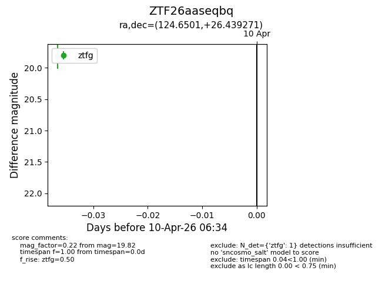
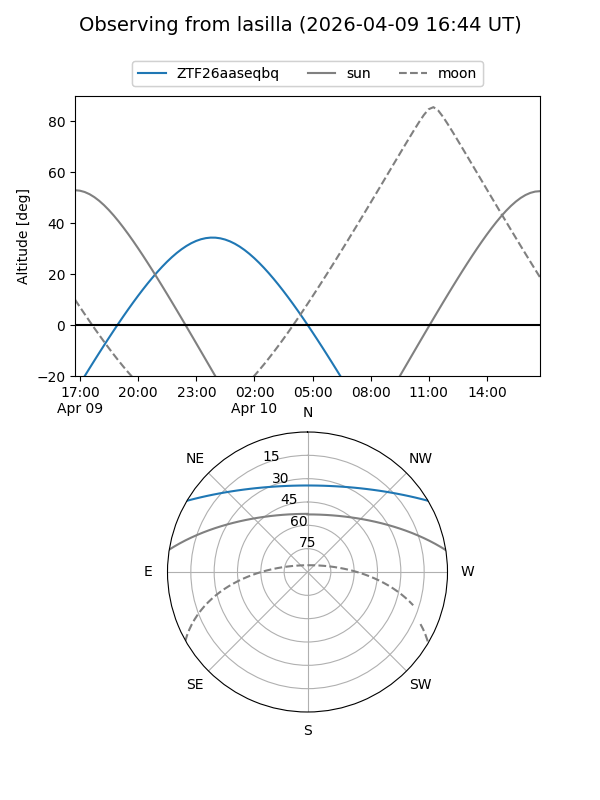
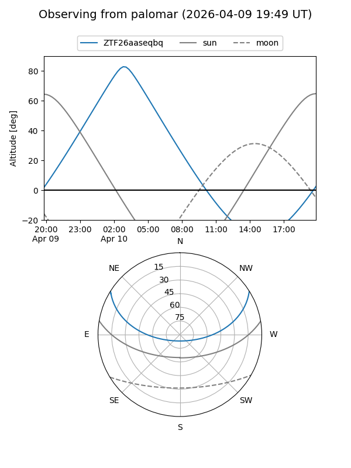

ZTF26aaseqbq
Target ZTF26aaseqbq at 2026-04-10 06:43
Aliases and brokers:
FINK: link
Lasair: link
ALeRCE: link
alt names
ZTF26aaseqbq (ztf,fink_ztf)
Coordinates:
equatorial (ra, dec) = 124.6501,+26.43927
equatorial (HMS+DMS) = 08:18:36.03,+26:26:21.37
galactic (l, b) = (196.5319,+29.92390)
Flags:
Photometry:
last ztfg=19.82
1 ztfg detections
Lightcurve

Visibility


Additional plots